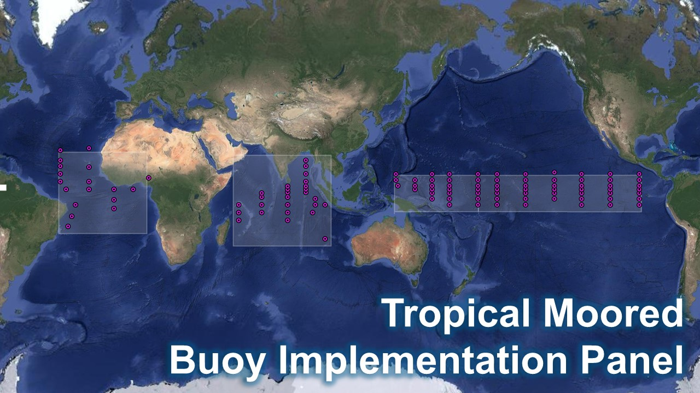

Strengthening ocean monitoring for a resilient and sustainable future
DBCP Action Groups
Much of the work achieved by the DBCP is through Action Groups. Each group maintains an observational buoy program that supplies data for operational and research purposes. The implementation of buoy deployments is also coordinated through global, regional, or specialized Action Groups.
A DBCP Action Group, as approved at DBCP-10, is an independent self-funded body that maintains, as a significant element of its responsibilities, an observational buoy programme providing meteorological and oceanographic data for real-time and/or research purposes in support of the World Weather Watch (WWW), the World Climate Research Programme (WCRP), the Global Climate Observing System (GCOS), and the Global Ocean Observing System (GOOS), and other relevant WMO and IOC programmes.
Action Groups of the DBCP shall support the aims and objectives of the DBCP - as set out in the terms of reference of the DBCP - particularly with respect to:
Provision of good quality and timely data to users.
Insertion of real-time (or near real-time) data into the GTS.
Exchange of information on data buoy activities and development and transfer of appropriate technology.
Global Action Groups
Global Drifter Program (GDP)
The GDP, which is adopted by the DBCP in 1996, is a branch of NOAA’s Global Ocean Observing System and a scientific project of the Data Buoy Cooperation Panel. It has two components: the Global Drifter Center at AOML and the Lagrangian Drifter Laboratory (LDL) at Scripps Institution of Oceanography, UC San Diego. The LDL supervises drifter production, designs and tests new types of drifters, and manages the real-time data flow on the Global Telecommunications System.
Objectives of the Global Drifter Center are (1) to maintain a global 5° x 5° gridded array of ~1,300 satellite-tracked surface drifting buoys to meet the need for an accurate and globally dense set of in-situ observations of mixed layer currents, sea surface temperature, atmospheric pressure, winds, waves, and salinity; and (2) to provide a data processing system for the use of these data.
Tropical Moored Buoy Implementation Panel (TIP)
The TIP, which is adopted by the DBCP in 1998, will be responsible for development, co-ordination, and implementation of moored buoy programs in the tropical ocean regions as part of an integrated approach to observing the climate system to address the research needs of CLIVAR and the operational strategies of GOOS and GCOS.
The TIP serve the needs of GOOS and GCOS in its role as an Action Group of the Data Buoy Cooperation Panel (DBCP) and as an integral component of the Data Buoy Observations Team within the Observations Program Area of the Joint Technical Commission for Oceanography and Marine Meteorology (JCOMM). The TIP will also co-ordinate tropical moored buoy program implementation on behalf of CLIVAR and, in particular, provide oversight and co-ordination for experimental pilot arrays.

Regional Action Groups
An Action Group may also be regional or national in nature provided that its programme benefits a regional or international community.
To be adopted as an Action Group of the DBCP the terms of reference or operating principles of the body or programme shall be submitted to a session of the DBCP for formal approval. Once approved these shall be lodged with the Secretariats of WMO and IOC.
The DBCP shall support the activities of its adopted action groups especially through the assistance of its officers (technical coordinator and the Secretariats of WMO and IOC) as far as resources allow.
Action Groups of the DBCP shall submit annual reports of their activities to the Chairperson of the DBCP.
European EUCOS Surface Marine Programme (ESURFMAR), adopted by the DBCP in 1987 as EGOS, coordinate, optimize, and progressively integrate European activities for surface observations over the sea in support of Numerical Weather Prediction and climate. It maintain an operational network of drifting buoys measuring air pressure and sea surface temperature in the North Atlantic, Tropical Atlantic, and Arctic, with data made available in real time onto the Global Telecommunication System of WMO.
Learn more...
International Arctic Buoy Programme (IABP), adopted by the DBCP in 1991, work together to maintain a network of drifting buoys in the Arctic Ocean to provide meteorological and oceanographic data for real-time operational requirements and research purposes including support to the World Climate Research Programme (WCRP) and the World Weather Watch (WWW) Programme.
Learn more...
Established in 1994, the International South Atlantic Buoy Programme (ISABP) operates as a regional action group focusing on the South Atlantic Ocean. The ISABP’s buoys collect oceanographic and meteorological data to support both regional and global initiatives, including GOOS and GCOS.
Learn more...
Adopted in 2002, the North Pacific Data Buoy Advisory Panel (NPDBAP) focuses on maintaining a buoy network in the North Pacific Ocean north of 30°N. This program supports regional observation efforts, contributing to global data-sharing initiatives and providing critical information for meteorological and oceanographic applications.
Learn more...
Launched in 1996, the International Buoy Program for the Indian Ocean (IBPIO) is an essential component of the Indian Ocean Observation Network. Under the program, the National Institute of Ocean Technology (NIOT) operates and maintains a network of moored buoys, including advanced Ocean Moored buoy Network for Northern Indian (OMNI) buoys.
IBPIO supports diverse research objectives, including the study of monsoon systems and their influence on regional climates. Its buoys also contribute to operational weather forecasting, showcasing the value of regional Action Groups in addressing local challenges while contributing to global efforts.
Learn more...
The International Programme for Antarctic Buoys (IPAB) adopted in 1994, works to maintain a buoy network in the Southern Ocean, particularly over sea ice. This program supports research on Antarctic climate, weather forecasting, and satellite measurement validation.
By providing crucial data on ice dynamics and ocean-atmosphere interactions, IPAB enhances the understanding of the Southern Ocean’s role in global climate systems.
Learn more...
Other Groups
The Southern Ocean Buoy Program (SOBP) focuses on deploying barometer buoys in the Southern Ocean, maintaining an array of approximately 300 drifting buoys south of 50°S. This initiative enhances the observation network in a region critical for understanding global climate processes.
Learn more...